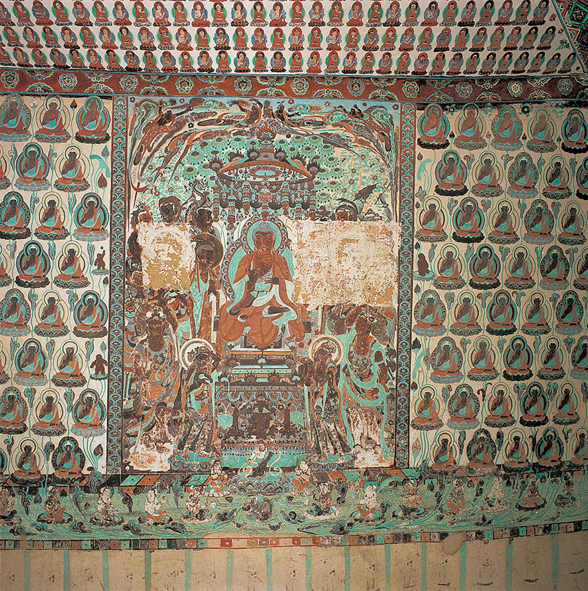
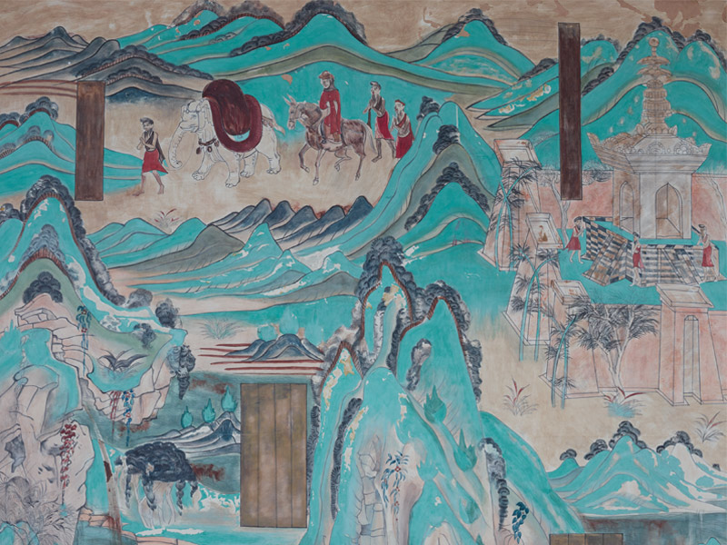
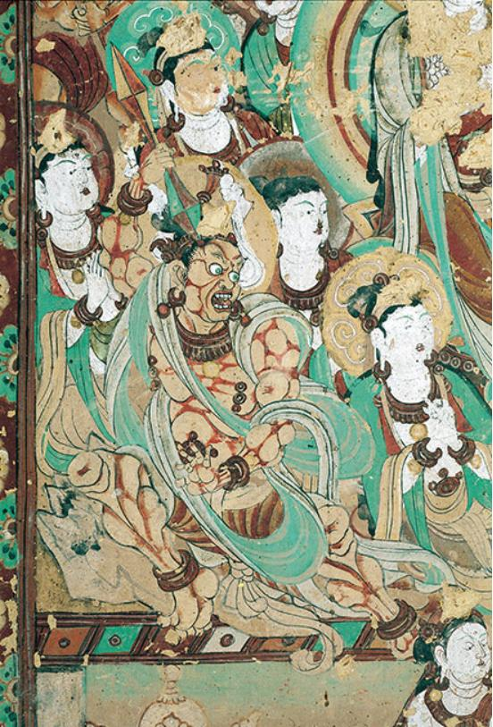
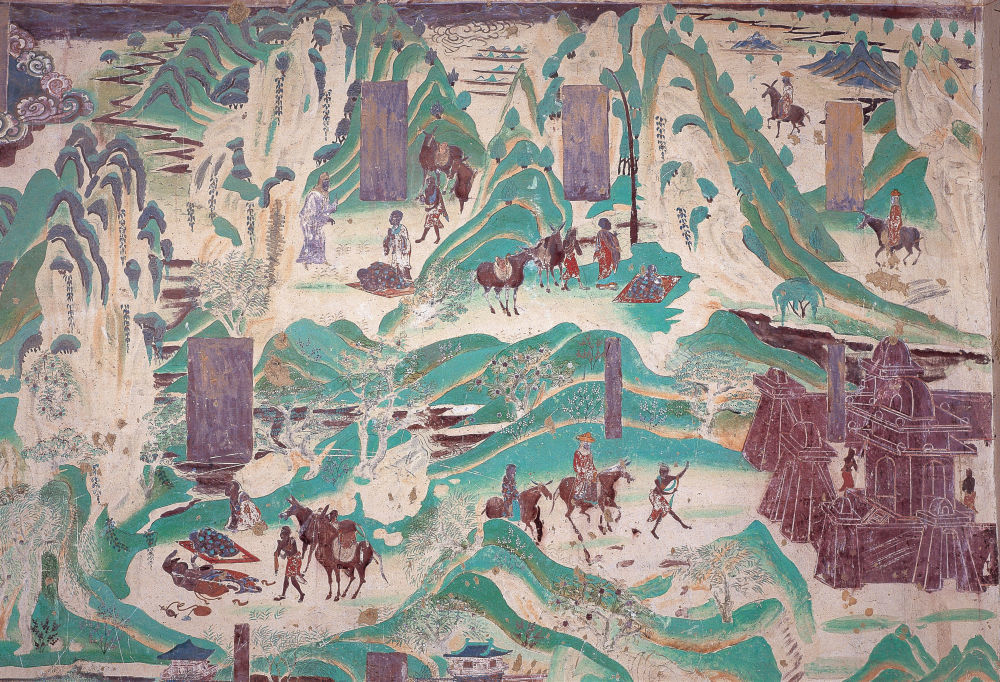
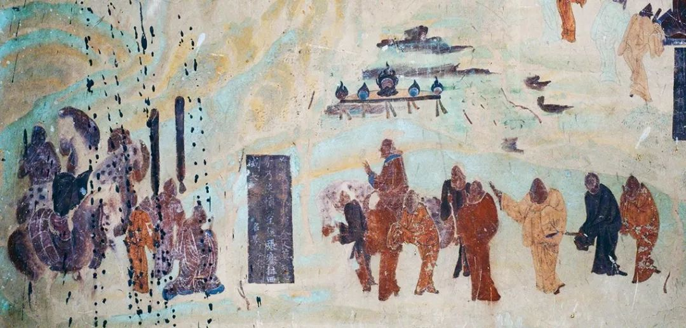

壁画精品

飞天壁画
唐代 · 莫高窟第320窟

九色鹿本生
北魏 · 莫高窟第257窟

维摩诘经变
唐代 · 莫高窟第103窟

反弹琵琶
唐代 · 莫高窟第112窟

药师经变
唐代 · 莫高窟第217窟

无量寿经变
唐代 · 莫高窟第172窟
探索敦煌壁画的艺术魅力，感受千年文化的传承与辉煌

唐代 · 莫高窟第320窟
北魏 · 莫高窟第257窟

唐代 · 莫高窟第103窟

唐代 · 莫高窟第112窟

唐代 · 莫高窟第217窟

唐代 · 莫高窟第172窟